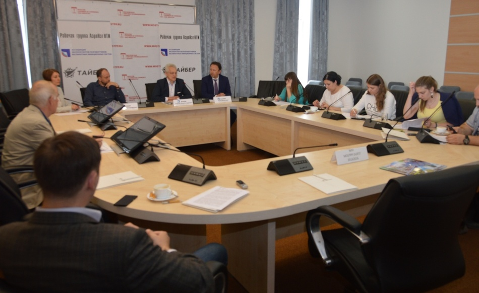

«ТАЙБЕР» В ЧИСЛЕ ЭКСПЕРТОВ ОТРАСЛИ
В рамках проекта «Клуб беспилотная среда» Сергей Тыцык, технический директор ООО «Тайбер», в числе экспертов отрасли беспилотных авиационных систем принял участие в пресс-конференции, посвященной утверждению дорожной карты «АэроНэт» Национальной технологической инициативы.
По мнению экспертов, устойчивое развитие предпринимательства, а также конкурентоспособность российских продуктов БАС обеспечат прописанные в дорожной карте меры по устранению основных ограничений и барьеров, стоящих на пути развития отрасли. В первую очередь, это урегулирование вопросов легализации БВС в воздушном пространстве. Совместными усилиями российского профессионального сообщества, Минтранса РФ и Минпромторга РФ подготовлен и внесен в Госдуму законопроект о внесении поправок в Воздушный кодекс. Новый законопроект направлен на либерализацию воздушного законодательства с передачей контролирующих функций саморегулируемым организациям рынка в части БВС массой до 30 кг.
Амир Валиев, президент Ассоциации эксплуатантов и разработчиков беспилотных авиационных систем (ЭРБАС): «Внесения предложенных профессиональным сообществом поправок позволят создать реальные правовые возможности эксплуатации БАС, помогут производителям и эксплуатантам успешно развивать свой бизнес».
Сергей Тыцык отметил, что новый импульс развитию рынка гражданских беспилотников в России обеспечат меры государственной поддержки. Участие государства в пилотных проекта на принципах государственно - частного партнерства с привлечением бюджетных инвестиций на создание перспективных образцов БАС и материалов помогут как малому, так и среднему бизнесу. В результате совместных программ опытной эксплуатации производители и эксплуатанты БВС смогут в реальных условиях определить технические требования и условия безопасной эксплуатации новых разработок. «Сегодня на рынке БАС проекты делятся на инициативные и на те, которые реализовываются при поддержке силовых структур, - говорит Сергей Тыцык, технический директор научно-производственного предприятия «Тайбер». - Военные ведомства финансируют разработки, производят необходимые испытания на своих полигонах, совместно с производителями доводят продукт «до ума». В гражданском секторе частные компании несут собственные расходы на все этапы создания БАС - от разработки до производства и испытаний готового изделия. Финансовая перегруженность и риски, связанные с выходом нового продукта не могут стимулировать бизнес на новые разработки. Инвесторы неохотно финансируют пилотные проекты по причине неурегулированности правовых вопросов производства и эксплуатации БАС».
Необходимой мерой для формирования рынка БАС станут мероприятия дорожной карты в части стандартизация процедур применения БВС и полезной нагрузки: методики, стандарты проверки оборудования, расшифровка результатов, метрология и т.д. В настоящее время в отрасли отсутствуют единые установленные нормы и правила эксплуатации оборудования и единства измерений, что является серьезным барьером для выстраивания бизнес - отношений, а также качества продуктов и услуг. Уже существующая методология проведения мониторинга сельхозугодий и внесения веществ, аэрофотосъемки, исследования дикой природы и т.д. пилотируемыми аппаратами применительно к БВС не соответствует технически. Зачастую сами заказчики вынуждены инициировать в своих интересах разработку и создание документов в области стандартизации. Приведение норм и правил эксплуатации БАС к единым стандартам позволят обеспечить конкурентоспособность и качество продукции, услуг с применением беспилотных воздушных судов.
По мнению экспертов, только в условиях реальной эксплуатации возможно отработать технологии, процедуры и надежность беспилотной техники, определить реальный ресурс оборудования. Серийное использование беспилотников позволит не только просчитать экономический эффект, но также построить полную инфраструктуру БАС с центрами техобслуживания, складскими программами и т.д. Применение беспилотных воздушных судов в различных секторах экономики на собственном рынке даст стимул для налаживания международного сотрудничества и роста экспортного потенциала, обеспечит инвестиционную привлекательность отрасли.
«При полноценном внедрении всех мероприятий, описанных в дорожной карте, к 2035 году Россия станет одним из глобальных лидеров отрасли по сегментам «Перевозки», «Сельское хозяйство», «ДЗЗ и мониторинг», «Поиск и спасение». Мировой рынок БАС и услуг на их основе к 2035 году мы оцениваем в более чем в 200 млрд. долл. США, а годовой объем рынка применения БАС в России к этому времени составит 35-40 млрд. долл. США, - комментирует Сергей Жуков, лидер рабочей группы АэроНет. - Реализация «дорожной карты» будет иметь неоспоримый социально – экономический эффект. Например, к 2035 году прогнозируется создание 50 000 новых высокотехнологичных рабочих мест в сфере разработки и производства БАС, комплектующих и полезных нагрузок. Запланировано появление 500 000 новых рабочих в сфере производства и услуг».
